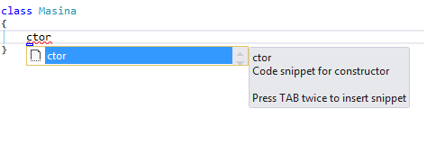
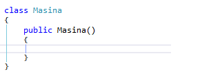

##### CUT (Delete the line and save it in the clipboard)
# CTRL+X
Delete the character after the bar
Delete
Move the cursor one word at a time
CTRL
Move the cursor at the beginning of the line or the end
HOME OR END
Move to the beginning of the file or to the end
CTRL+HOME OR CTRL+END
Delete one word to the left of the cursor
CTRL+Backspace
Delete one word to the right of the cursor
CTRL+DELETE
Google Chrome(IE) Shortcuts
##### Open a new tab
# CTRL+T
##### Close a tab
# CTRL+W
##### Open a link in a new tab
# CTRL+CLICK
##### Open a link in a new tab and switch to that tab
# CTRL+SHIFT-CLICK
##### Open a new instace of Google Chrome
# CTRL+N
##### Open the last tab that you closed
# CTRL+SHIFT-T
##### Select the address bar
# CTRL+L
Comment code
CTRL+K,CTRL+C
Uncomment code
CTRL+K, CTRL+U
Bookmark line
# CTRL+K, CTRL+K
Next bookmark
# CTRL+K, CTRL+N
Find and replace
# CTRL+H
Useful tools/extensions for Visual Studio
Ctor
Creates an empty constructor 
Prop
Creates an auto property
SVM
Creates a static void main method
Javascript este un limbaj folosit in browser in special, fiind folosit pe partea de client
Java este un limbaj folosit pentru aplicatii desktop sau pentru partea de server
Java is to JavaScript as Car is to Carpet
 Daca v-a placut/nu v-a placut astept sugestii si imbunatatiri. Daca aveti
Prezentari viitoare
Daca v-a placut/nu v-a placut astept sugestii si imbunatatiri. Daca aveti
Prezentari viitoare
- LINQ (Language Integrated Query)
- EntityFramework
- ...